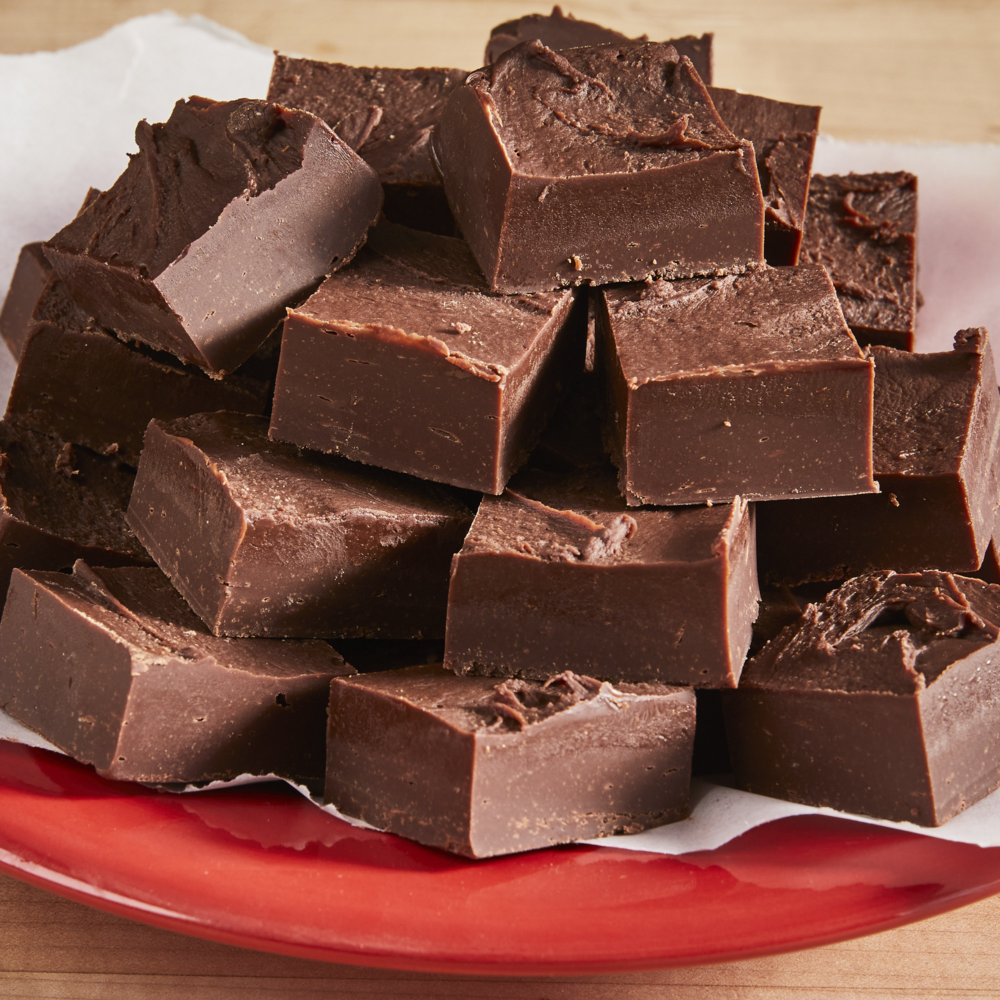

Fudge

Description
I double the recipe and put in a glass baking dish (9x13 inches).
Nice for holidays . . . Keep it for a secret and family and friends
will think you worked forever on it . . . (smiles). You can also
use peanut butter chips and make peanut butter fudge.
Ingredients
- 3 cups semisweet chocolate chips
- 1 (14 ounce) can sweetened condensed milk
- 1/4 cup butter
- 1 cup chopped walnuts (Optional)
Steps
- Place chocolate chips, sweetened condensed milk, and butter or margarine in large microwaeable bowl. Zap in microwave on medium until chips are melted, about 3-5 minutes, stirring once or twice during cooking. Stir in nuts, if desired.
- Pour into well-greased 8x8-inch glass baking dish. Refrigerate until set.